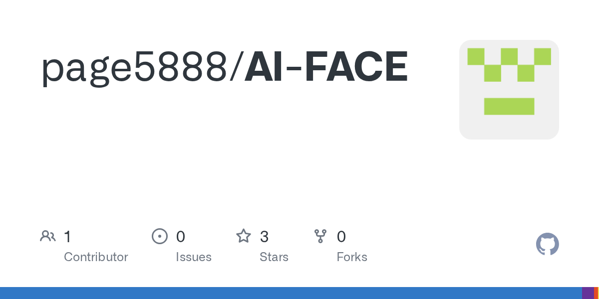

Threads｜AI FACE：替 ChatGPT 加上一張本機處理的虛擬臉
為什麼保存
這則 Threads 值得保存，因為它捕捉到 AI 介面的一個小但重要方向：不是再做一個聊天機器人，而是替既有 AI 服務加上一層「可見、可移動、有表情、有嘴型」的角色介面。
AI FACE 的定位介於 Chrome extension、ChatGPT overlay、桌寵與輕量 VTuber face rig 之間。它不像完整的 Open-LLM-VTuber 那樣把 LLM、TTS、視覺與 Live2D 全部串成獨立 AI 夥伴，而是把 ChatGPT 原本的文字與語音保留，把「臉、眼神、表情、嘴型與角色存在感」補在頁面旁邊。
Threads 貼文可見內容
來源是 Threads 帳號 `0xspeter`，公開頁可見互動數約 6,543 次瀏覽、79 個讚、6 則回覆、8 次轉發。
貼文主軸是：
> AI FACE 可以想成「替 ChatGPT 裝上一張臉」，讓原本只有文字和聲音的 AI，在畫面旁邊出現一個會眨眼、轉動視線、改變表情，還能跟著語音做嘴型反應的角色。
作者補充幾個重點：
- 它想解決的是「AI 聲音從空氣裡飄出來、少了一個可對話對象」的空洞感。
- 角色會放在 ChatGPT 頁面上，使用者可移動、縮放、鎖定位置。
- 可切換內建角色，或匯入自己的圖片與 24 格角色素材。
- 角色圖片與語音分析留在本機。
- 不需要 OpenAI API Key，也不讀取聊天內容。
- 只有使用者主動開啟語音同步後，才分析目前 ChatGPT 分頁的聲音。
- 目前是 0.1.0 預覽階段，尚未上架 Chrome Web Store；嘴型同步不是精準逐字唇形，任意圖片也不能自動變完整 Face Rig。
GitHub 查核
官方 repo：`page5888/AI-FACE`
授權：Mozilla Public License 2.0（MPL-2.0）
版本：README 標示 `0.1.0` internal preview
狀態：尚未上架 Chrome Web Store，需手動安裝預覽版
查核時 GitHub metadata：3 stars、0 forks、最新 pushed_at 為 2026-08-05T01:22:50Z。
README.zh-TW 將 AI FACE 定義為：
> AI FACE 是獨立開發的 Chrome 擴充功能，會在支援的 ChatGPT 頁面旁加入可移動的臉或角色。ChatGPT 繼續負責智慧、內容與聲音；AI FACE 負責臉、眼神、視覺口型、角色顯示與 Overlay 操作。
官方 README 明確列出隱私與邊界：
| 項目 | README 查核結果 |
|---|---|
| OpenAI API Key | 不需要。 |
| 聊天內容 | 不讀取對話文字。 |
| 角色圖片 | 不上傳到 AI FACE 後端；自訂角色保存在本機。 |
| 後端 / analytics / 廣告 | README 寫明沒有會員、後端、Analytics、廣告、雲端同步或開發者付費模型推論。 |
| 語音同步 | 使用者主動啟動後，擷取目前 ChatGPT 分頁聲音，建立本機分析支線產生音量、頻段、起音與 viseme 權重；不錄音、不保存、不轉錄、不上傳。 |

現階段可做什麼
README 列出的目前功能包括：
- 在 `https://chatgpt.com/*` 自動顯示 AI FACE Overlay。
- 第一次使用顯示 AI FACE Core，不必先生成圖片。
- 內建六個選項：AI FACE Core、AI FACE Aura、Miu Voice Face、Haruna、Miu、Nova。
- 本機保存一個自訂立繪或 Pixel Pet Sprite Sheet。
- 支援移動、縮放、鎖定、重設、顯示／隱藏與本機版面保存。
- 使用 Chrome Document Picture-in-Picture 做瀏覽器管理的置頂模式。
- 使用者主動啟動的 ChatGPT 分頁語音反應，保留正常聲音輸出。
- 本機 MFCC 輔助 A/E/I/O/U/S 權重，加上靜音與子音近似 fallback。
與 Open-LLM-VTuber 的差異
知識庫已有一篇 0xspeter 分享的 Open-LLM-VTuber 條目。兩者都和「AI 虛擬角色」有關，但層級不同：
| 專案 | 更像什麼 | 適合情境 |
|---|---|---|
| Open-LLM-VTuber | 完整 AI 虛擬夥伴框架，整合 LLM、TTS、ASR、Live2D、視覺感知等 | 想打造獨立 AI 角色、直播互動、桌寵或完整語音助理。 |
| AI FACE | ChatGPT 頁面上的本機視覺角色 overlay | 已經用 ChatGPT 語音，只想補一張可動臉與角色存在感。 |
所以這則不是重複收錄，而是同一個趨勢的另一個端點：完整 AI companion 與輕量 browser overlay 可能會並行發展。
使用與安全提醒
- 目前仍是 0.1.0 internal preview，未經 Chrome Web Store 正式審核；手動安裝 extension 前應自行檢查 source code、permissions 與 release 來源。
- 它主打不讀取聊天內容，但 extension 仍會在 `chatgpt.com` 掛載 overlay；企業或學校環境應先確認 extension 安裝政策。
- 語音同步是近似嘴型，不是精準音素時間軸；不要把它當成專業配音 lip sync 工具。
- 任意圖片不能自動變成完整 Face Rig；若要高品質表情與嘴型，仍需要合規授權的角色素材或 24 格/多格 sprite sheet。
- 自訂角色圖片、VTuber 素材與二創角色需確認著作權、肖像權與商用範圍。
- Chrome Document Picture-in-Picture 置頂仍是瀏覽器管理的小窗，不是無邊框、透明、可穿透點擊的原生桌寵。
延伸閱讀
- Threads 原文：https://www.threads.com/@0xspeter/post/DbpCO7tkwK1
- GitHub｜page5888/AI-FACE：https://github.com/page5888/AI-FACE
- AI FACE 公開網站：https://page5888.github.io/AI-FACE-Personas/
- 社群角色庫：https://github.com/page5888/AI-FACE-Personas
- 相關舊文：Open-LLM-VTuber｜會說話、看畫面、做表情的開源 Live2D AI 虛擬夥伴